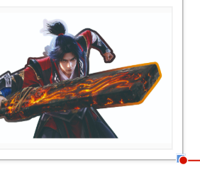
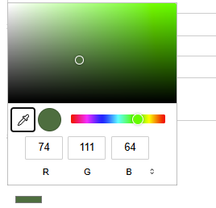
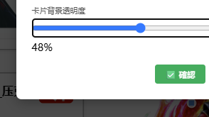
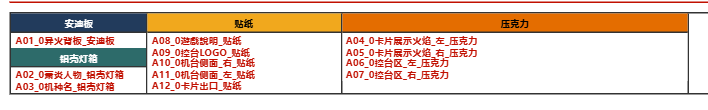
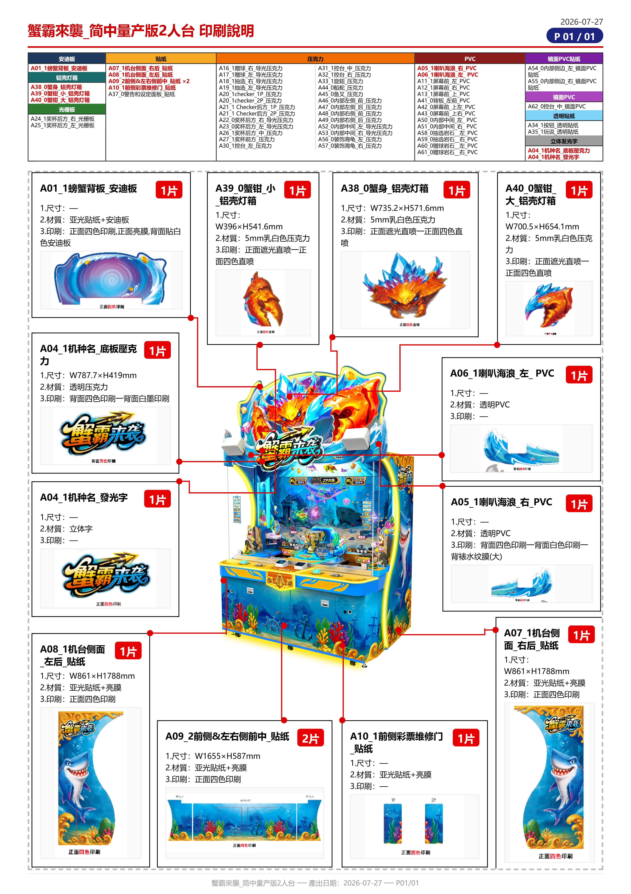
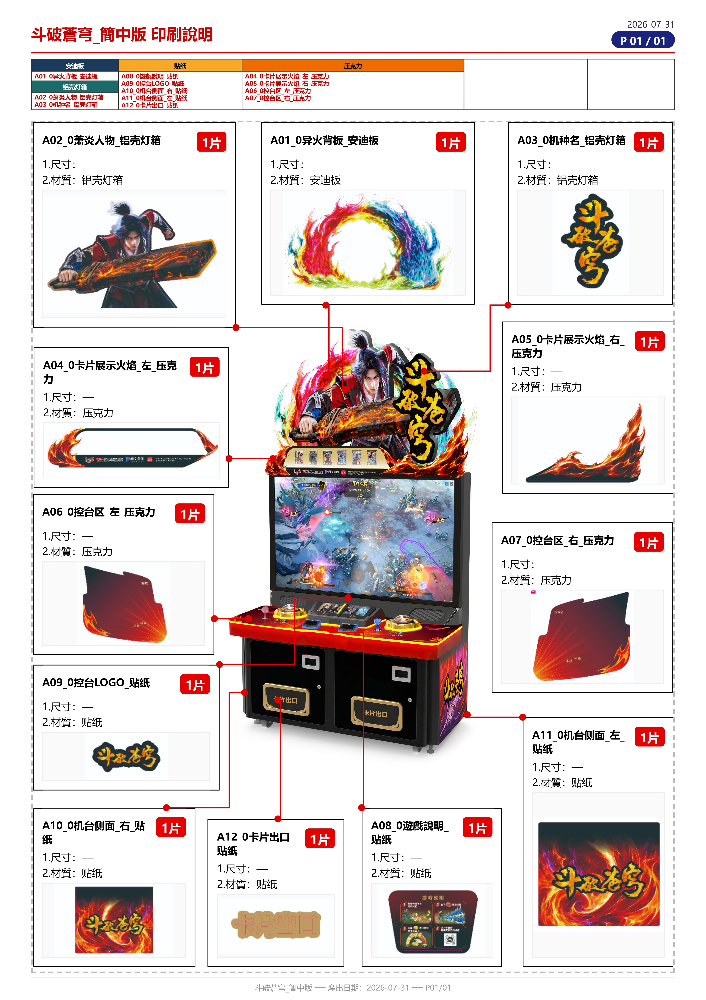
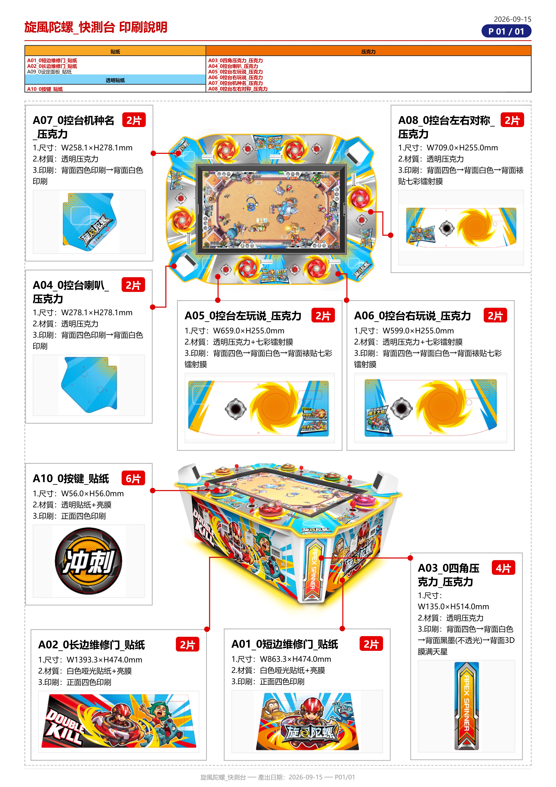

持續進化：印刷整合工具更新報告
從一台機台到多機台支援，從基本功能到進階編輯。這段時間工具不斷迭代，加入更多讓設計師省時省力的功能。
✅ 卡片進階編輯
✅ 多機台圖
✅ 材質總表優化
✅ 新機台支援

從一台機台到多機台支援，從基本功能到進階編輯。這段時間工具不斷迭代，加入更多讓設計師省時省力的功能。
讓設計師能更細緻地調整每張卡片的外觀，方便二次修改與疊圖對照。
卡片改用 1px 60% 灰色細線外框，低調不搶眼，印刷稿更乾淨。

標題（零件名稱）與內文（1.尺寸 / 2.材質 / 3.印刷）可分開選色，數量維持原色不受影響。

拖曳透明度滑桿讓整張卡片半透明，方便二次修改時透視底下的機台圖對位。

不同機台的材質種類不同，總表自動調整，不再出現多餘的空白欄位。

一個頁面可以同時放多張機台圖，例如正視圖 + 上視圖，讓印刷指示更完整。
預設載入正視圖 + 上視圖兩張，也能用「➕ 機台圖」按鈕再新增，或 × 移除。
每張機台圖都有自己的鎖定鈕，可獨立移動、縮放，排好後鎖定防誤觸。
卡片的紅線標註可以連到頁面上任何一張機台圖，A* 自動閃避不變。

工具已成功套用到三款機台，每台都走同一套標準建置流程。



「工具不是做完就結束，而是跟著每一台機台一起長大。」